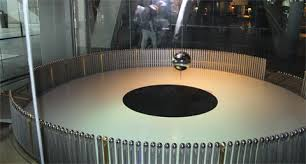

В Москве произошел взрыв в здании РАН, один человек погибОдин человек погиб при разрыве баллона с фреоном в здании Российской академии наук (РАН) на юго-западе Москвы. Об этом ТАСС сообщили в правоохранительных органах столицы. В РАН причиной произошедшего называют ошибку сотрудника компании, обслуживающей холодильное оборудование.
"ЧП произошло в одном из помещений здания академии, расположенной на Ленинском проспекте. Разорвался баллон с газом фреоном. В результате инцидента один человек погиб", - сказал источник.
В пресс-службе столичной полиции факт инцидента подтвердили, не уточнив названия организации. "Один человек погиб в результате разрыва баллона с бытовым газом при проведении работ по обслуживанию оборудования", - сказали в полиции, отметив, что на месте ЧП работает оперативно-следственная группа. Причина инцидента устанавливается.
Советник президента РАН Светлана Попова также подтвердила ТАСС факт взрыва баллона фреона. "Погиб один человек, сотрудник компании, обслуживающей холодильное оборудование. Он допустил какую-то техническую ошибку в работе", - сказала Попова.
По ее словам, других пострадавших в результате инцидента нет.
Martina собирается посетить мероприятиеNullam quis tincidunt enim. Curabitur ullamcorper convallis tellus, sit amet pharetra enim eleifend nec. Curabitur congue ultrices laoreet. Sed tristique felis ac ultricies commodo. Nullam sodales condimentum consectetur. Fusce efficitur dictum tortor, sed fermentum felis consequat quis. Nullam eu sollicitudin velit. Donec scelerisque, nulla et varius aliquam, lacus nibh laoreet magna, cursus feugiat nisl mauris eget enim. Aliquam vel lacus sed ipsum venenatis congue.
С чем носить тренировочные брюкиПо просьбе GQ Степан Михалков дает тренировочным брюкам шанс на существование не только в стенах тренажерного зала и примеряет 10 комплектов одежды с синими и серыми трениками в главной роли.
Кадырова не накажут за использование микрофона на матче "Терек" - "Спартак".Aenean lacinia purus at orci vulputate accumsan. Morbi pretium eget dui a sagittis. Morbi eleifend metus sit amet mi facilisis, sit amet ultrices est posuere. Etiam eros odio, commodo non orci ac, accumsan posuere neque. Vestibulum laoreet nibh sed sagittis faucibus. Fusce eget velit ut ex rutrum ultrices quis a ipsum. Pellentesque purus odio, finibus mattis posuere non, efficitur non odio. Fusce tempus justo diam, vel finibus leo maximus in. Morbi mattis tincidunt egestas. Praesent ut orci quis nulla tincidunt laoreet eu non erat. Curabitur convallis ex eget dui viverra commodo.
В Москве произошел взрыв в здании РАН, один человек погибОдин человек погиб при разрыве баллона с фреоном в здании Российской академии наук (РАН) на юго-западе Москвы. Об этом ТАСС сообщили в правоохранительных органах столицы. В РАН причиной произошедшего называют ошибку сотрудника компании, обслуживающей холодильное оборудование.
"ЧП произошло в одном из помещений здания академии, расположенной на Ленинском проспекте. Разорвался баллон с газом фреоном. В результате инцидента один человек погиб", - сказал источник.
В пресс-службе столичной полиции факт инцидента подтвердили, не уточнив названия организации. "Один человек погиб в результате разрыва баллона с бытовым газом при проведении работ по обслуживанию оборудования", - сказали в полиции, отметив, что на месте ЧП работает оперативно-следственная группа. Причина инцидента устанавливается.
Советник президента РАН Светлана Попова также подтвердила ТАСС факт взрыва баллона фреона. "Погиб один человек, сотрудник компании, обслуживающей холодильное оборудование. Он допустил какую-то техническую ошибку в работе", - сказала Попова.
По ее словам, других пострадавших в результате инцидента нет.